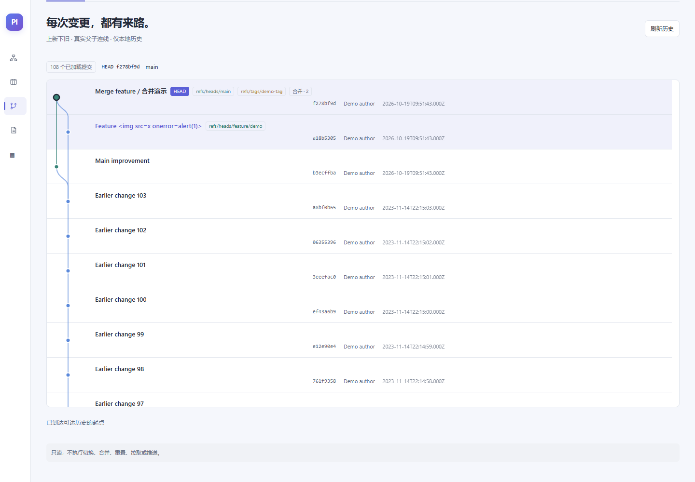
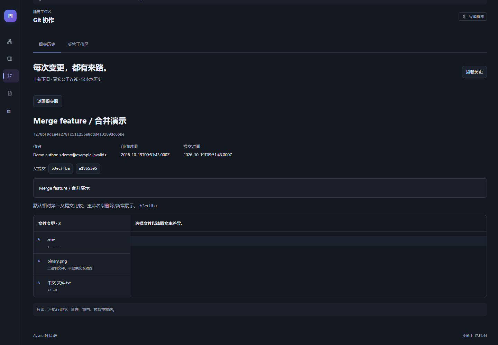
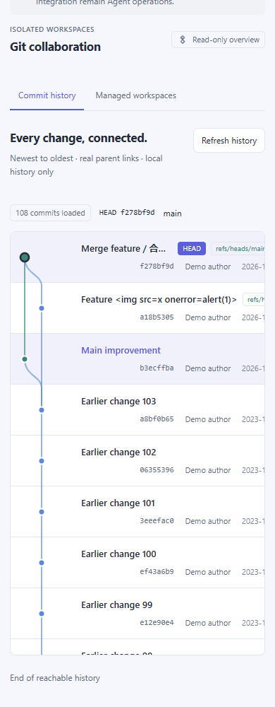
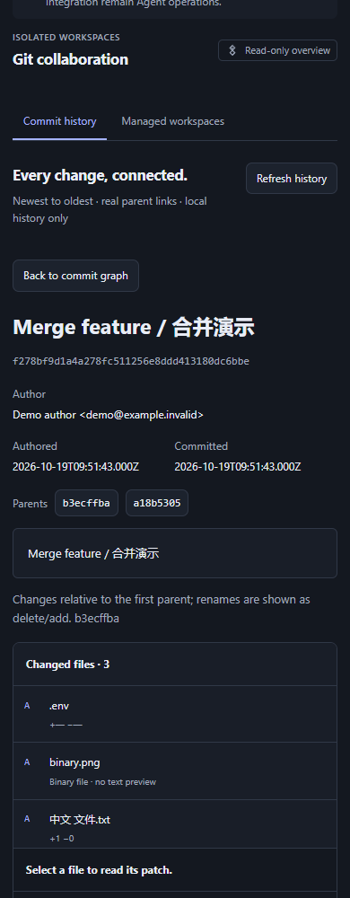

只读 Git 提交图与二级详情
最终源码 010d630 的真实 HTTP / Git 浏览器回归截图。中英、390/768/1440、明暗共24张；以下节选。自动截图不等于人工目视或已安装宿主E2E。
中文 · 桌面 · 浅色 · 真实合并图
中文 · 桌面 · 深色 · 提交详情与敏感路径保护
English · 390px · Light · Graph
English · 390px · Dark · Detail